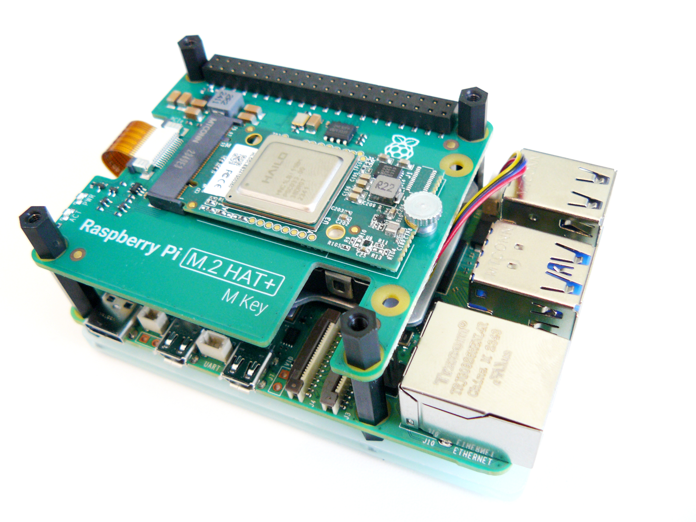

📖 Overview
NPUs are dedicated AI accelerators. Unlike general-purpose CPUs or graphics-focused GPUs, NPUs are designed specifically for the matrix math required for deep learning and neural network inference.
⚙️ Architecture & Working Principle
Consists of massive arrays of Multiply-Accumulate (MAC) units, local memory buffers, and specialized controllers for tensor operations.
Optimized for high-throughput, low-precision arithmetic (INT8, FP16). They process large blocks of data (tensors) simultaneously rather than individual values.
🖼️ Technical Diagrams

Source | License: Public Domain / Creative Commons via Wikimedia